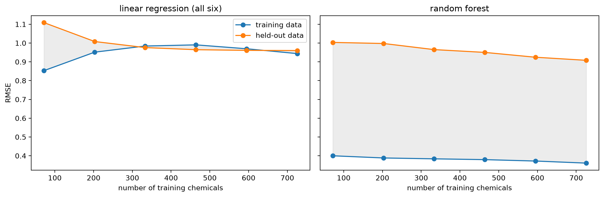

Train on growing subsets. Linear regression’s training and held-out errors meet at RMSE ≈ 0.96: it is limited by bias. The forest fits its training data far better than new data (0.36 against 0.91) and is still improving.